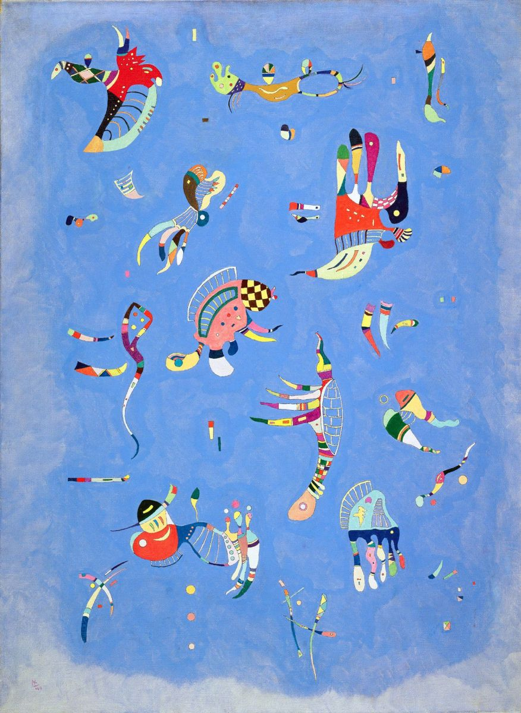

«Синее небо»
Исследователь творчества Кандинского Мишель Кониль-Лакост писал о полотне «Синее небо» так: «Графическая строгость на этой картине уступает барочной множественности мотивов, они выглядят так, словно потеряли всякую связь со структурой, которая была определяющей в пространстве и долгое время была понятной и заметной только художнику, а его единственным долгом было сделать ее видимой для всех остальных. Странные плавающие фигуры хочется назвать существами. Художник не делает ничего, чтобы смягчить этот причудливый, гротескный эффект. С другой стороны, чем более абсурдны эти фигуры, тем более очевидно его стремление проработать их в мельчайших деталях, тем более изысканны их формы, тем ярче цвета». После закрытия Баухауза в 1933 году Кандинский перебирается в Париж. Здесь он проживет до самой смерти, поскольку после выставки «Дегенеративное искусство», устроенной нацистами в 1937 году и представившей около 50 его работ, вернуться в Германию художник уже не мог. В последние годы жизни Кандинский, по мнению многих исследователей, снова возвращается к фигуративной живописи. Однако ее весьма сложно назвать таковой в традиционном смысле, это скорее некий ее синтез с абстрактным искусством. Картины художника приобретают немного шутливый, даже игривый тон. Кандинский начинает населять свои работы причудливыми «биоморфными» формами, то ли летящими, то ли плывущими по поверхности холста (1, 2, 3, 4). Картина «Синее небо» - ярчайший представитель этого периода. Существа, похожие одновременно на рыб и птиц и напоминающие животных с работ Хоана Миро, на первый взгляд хаотично разбросаны по синему фону. Но это обманчивое впечатление, ведь Кандинский по-прежнему придает огромное значение композиции. Загадочность природы этих существ усиливается и за счет неопределенности фона: несмотря на название картины, невозможно с полной уверенностью утверждать, что перед нами именно небо, а не морские волны.